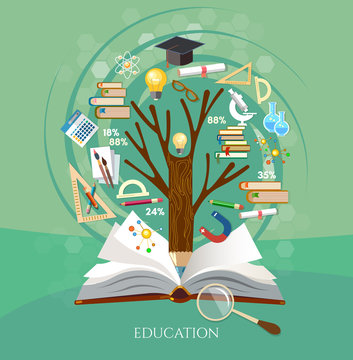

Education is much more than the simple memorization of facts or the accumulation of academic degrees. It is the fundamental pillar of human progress, a lifelong journey of discovery, and the key to unlocking an individual's true potential. Often described as the greatest equalizer, education bridges the gap between dreams and reality, empowering people from all walks of life to shape a better future.
At an individual level, education serves as the catalyst for critical thinking and personal development. When we learn, we are challenged to question the world around us, analyze complex situations, and formulate our own opinions. A robust education instills core values such as empathy, resilience, and curiosity. It transforms individuals from passive observers into active problem-solvers, equipping them with the practical skills needed to navigate the challenges of daily life.
Beyond personal empowerment, education is the driving force behind societal advancement. It is the most effective weapon against ignorance, poverty, and prejudice. Societies that prioritize high-quality, accessible education experience lower crime rates, improved public health, and stronger economies. By fostering a deeper understanding of diverse cultures and histories, education promotes social harmony. It breaks down the barriers of caste, creed, and gender, creating a more inclusive and equitable world.
Education is also the seed from which innovation grows. Every scientific breakthrough, technological advancement, and artistic masterpiece is rooted in a foundation of learning. In a rapidly changing, digital world, continuous education and adaptability are more critical than ever. Educated minds are the ones that will develop sustainable solutions to global crises, from climate change to public health emergencies.
Ultimately, education is a lifelong endeavor that extends far beyond the walls of a classroom. It is a fundamental human right that not only shapes the destiny of the individual but also determines the trajectory of humanity. As Nelson Mandela famously stated, "Education is the most powerful weapon which you can use to change the world." Investing in education is the highest investment we can make in our collective future, ensuring a legacy of progress, peace, and prosperity for generations to come.
Essay about career